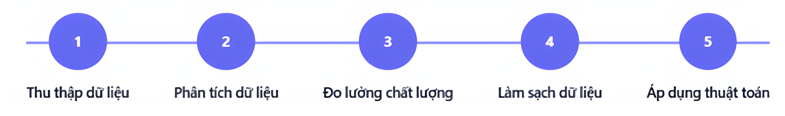

Chào mừng bạn đến với ứng dụng BI. Hãy chọn một mục bên dưới để xem thông tin chi tiết.
Trong bối cảnh giáo dục trực tuyến ngày càng phát triển, mức độ tương tác của sinh viên với các hoạt động học tập không đồng đều và ảnh hưởng rõ rệt đến hiệu quả học tập. Có những sinh viên tham gia tích cực qua việc xem video bài giảng, hoàn thành bài tập đúng hạn, và tham gia thảo luận; ngược lại, một số sinh viên thể hiện hành vi thụ động hoặc không tham gia các hoạt động học tập. Ngoài ra, còn tồn tại nhóm sinh viên với hành vi trung tính, không tích cực nhưng cũng không tiêu cực rõ rệt. Việc nhận diện và phân loại hành vi học tập thành các nhóm: tích cực, trung tính và tiêu cực là cần thiết nhằm giúp giảng viên và hệ thống quản lý đào tạo hiểu rõ mức độ cam kết và nhu cầu hỗ trợ của từng sinh viên. Tuy nhiên, hành vi học tập thể hiện qua nhiều loại dữ liệu phức tạp, rời rạc như số lần truy cập, thời gian tương tác, mức độ tham gia thảo luận, nên việc đánh giá thủ công gặp nhiều khó khăn. Do đó, phân tích hành vi học tập dựa trên dữ liệu trở thành hướng tiếp cận hiệu quả, cho phép xây dựng mô hình phân loại khách quan, hỗ trợ can thiệp kịp thời và cá nhân hóa quá trình học tập trực tuyến.
Đề tài nhằm phát triển hệ thống phân tích và phân loại hành vi học tập của sinh viên dựa trên dữ liệu tương tác thu thập được từ các nền tảng học tập trực tuyến, với các mục tiêu cụ thể như sau:
Pipeline mô hình phân loại hành vi học tập của sinh viên.
File dữ liệu đầu vào user.json, user-problem.json, user-video.json, và comment.json
| STT | Tên cột | Mô tả | Kiểu dữ liệu |
|---|---|---|---|
| 1 | user_ids | Mã sinh viên duy nhất. | object |
| 2 | num_course_order | Số lượng khóa học mà sinh viên đã đăng ký. | int64 |
| 3 | num_comments | Số lượng khóa học mà sinh viên đã đăng ký. | float64 |
| 4 | total_video_watched | Tổng số video mà sinh viên đã xem. | float64 |
| 5 | avg_speed | Tốc độ trung bình khi xem video. | float64 |
| 6 | total_watch_time | Tổng thời gian xem video của sinh viên. | float64 |
| 7 | num_questions_answered | Tổng số câu hỏi mà sinh viên đã trả lời. | float64 |
| 8 | avg_score | Điểm số trung bình của sinh viên qua các bài kiểm tra. | float64 |
| 9 | num_attempts | Tổng số lần thử làm bài của sinh viên. | float64 |
| 10 | correct_rate | Tỷ lệ câu trả lời đúng của sinh viên. | float64 |
Mô hình phân loại sinh viên theo mức độ tương tác và hiệu quả học tập:
MOOCCubeX là một kho dữ liệu khổng lồ được phát triển bởi nhóm chuyên gia tại Đại học Thanh Hoa, hợp tác với nền tảng giáo dục trực tuyến XuetangX – nền tảng MOOC hàng đầu của Trung Quốc. Bộ dữ liệu này tập hợp thông tin chi tiết về hành vi, tương tác và phản hồi của người học trên các khóa học trực tuyến, hỗ trợ sâu rộng cho các nghiên cứu về cá nhân hóa và thích ứng trong giáo dục số.
Từ nguồn dữ liệu phong phú này, nhóm đã lựa chọn tập trung vào các file dữ liệu quan trọng như user.json, user-problem.json, user-video.json, và comment.json để xây dựng hệ thống dự đoán hành vi học tập của sinh viên.
Để đảm bảo tính chính xác và khả năng áp dụng thực tiễn, nhóm lọc dữ liệu tập trung vào sinh viên đã đăng ký ít nhất 2 khóa học trong giai đoạn 2019–2020, nhằm phân tích những người học có mức độ tham gia đủ lớn.
Nhóm đã thu thập và thống nhất các đặc trưng quan trọng từ nhiều nguồn dữ liệu khác nhau, bao gồm:
Tổng cộng, bộ dữ liệu thống nhất gồm 694.529 dòng phản ánh đầy đủ hành vi và kết quả học tập của sinh viên, làm nền tảng xây dựng mô hình phân loại hành vi học tập chính xác và hiệu quả.